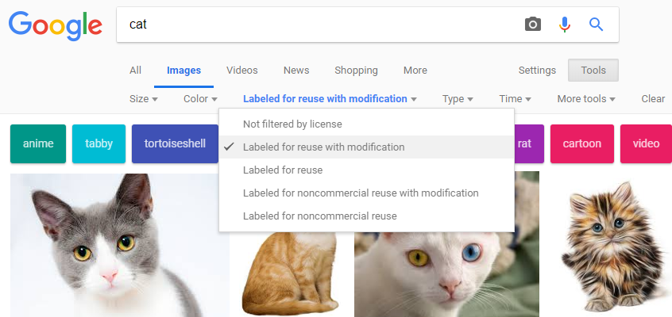

Introduction
This file is a deliberately incomplete template for students. Please use images you own, or images provided for royalty-free reuse. For examples, visit: images.google.com. Type a search term, then select Tools | Usage Rights | Labeled for reuse with modification.
The display Property
Discussion. By default, the <div> tag defines a block element, and the <span> tag defines an inline element. Block elements cause a line break, where inline elements are rendered left-to-right and wordwrapped, that is, the "normal flow." It is possible to override these defaults using the display property.
/* override normal flow */
div {display: inline; }
span {display: block; }
Caution. It is not usually a good idea to override the display flow of <div> elements and <span> elements, because, for example, if you need to break HTML into blocks you can just use a <div> and not an overridden <span>. Overriding the <span> makes the code less intuitive for programmers (including yourself) who might want to make modifications later. If it is absolutely necessary to override a span, probably a better idea would be to create a class, like "overriddenSpan," which more clearly identifies particular spans that have been overridden.
Demonstration. Below is a demonstration of <div> elements and <span> elements, using both normal flow and flow overidden using CSS display property.
Normal <span> text. Normal <span> text. Normal <span> text.
Overridden <span> text. Overridden <span> text. Overridden <span> text.
The float Property
Discussion. If an image is inserted into a paragraph in the normal flow, with no special CSS formatting, it can appear rather awkward.
That's why it's sometimes better to "float" the image, changing the flow. Elements can be floated to the left or to the right using the float property. This image is floated right, so the flow of text appears a bit more natural. The words flow around the image, including any additional space, like margin, border or padding, specified in the CSS.
Chrome DevTools
Here's a screenshot of the web page title changing color to purple using Chrome DevTools.